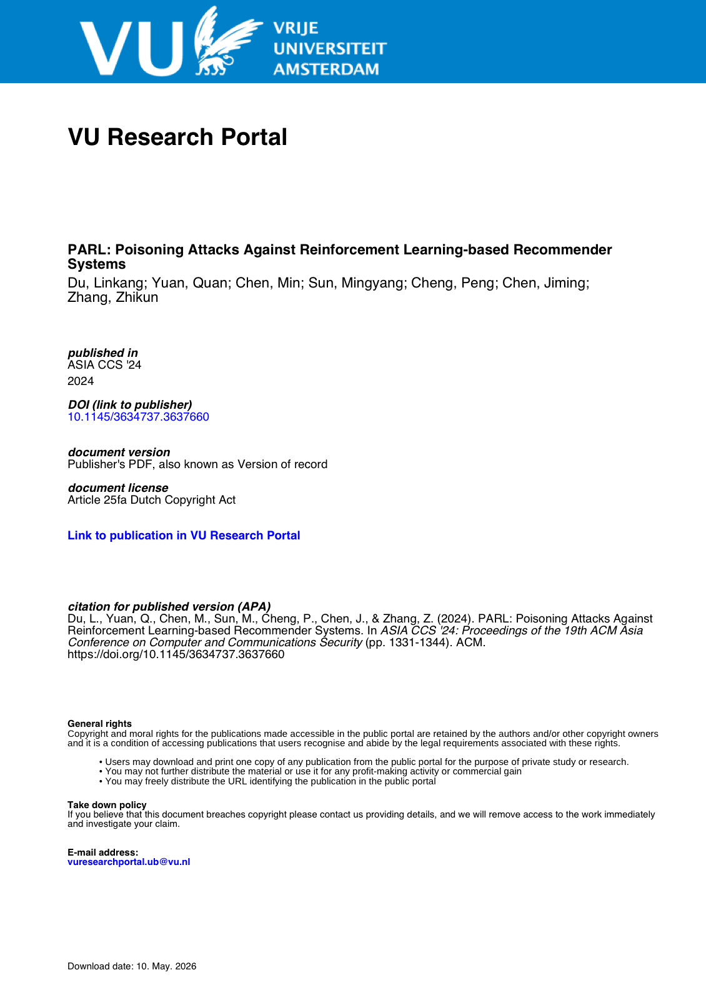

Abstract
Recommender systems predict and suggest relevant options to users in various domains, such as e-commerce, streaming services, and social media. Recently, deep reinforcement learning (DRL)-based recommendation systems have become increasingly popular in academics and industry since DRL can characterize the long-term interaction between the system and users to achieve a better recommendation experience, e.g., Netflix, Spotify, Google, and YouTube. This paper demonstrates that an adversary can manipulate the DRL-based recommender system by injecting carefully designed user-system interaction records. The poisoning attack against the DRL-based recommender system is formulated as a non-convex integer programming problem. To solve the problem, we proposed a three-phase mechanism (called PARL) to maximize the hit ratio while avoiding easy detection. The core idea of PARL is to improve the ranking of the target item while fixing the rankings of other items. Considering the sequential decision-making characteristics of DRL, PARL rearranges the item order of fake users to mimic normal sequential behavior. Experiments on three real-world datasets demonstrate the effectiveness and concealment of PARL.
Resources
Citation
@inproceedings{DYCSCCZ24,
author = {Linkang Du and Quan Yuan and Min Chen and Mingyang Sun and Peng Cheng and Jiming Chen and Zhikun Zhang},
title = {{PARL: Poisoning Attacks Against Reinforcement Learning-based Recommender Systems}},
booktitle = {{AsiaCCS}},
publisher = {ACM},
year = {2024},
}